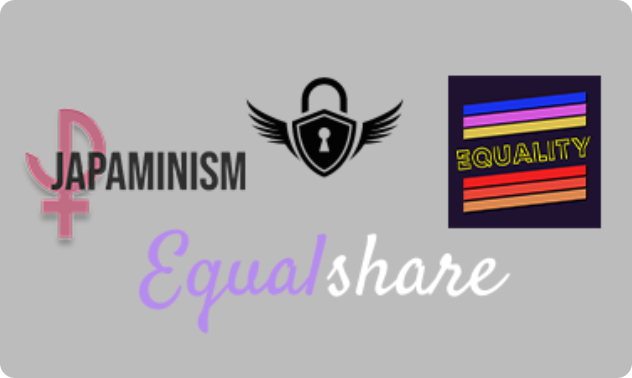

Les Autres projets sur le féminisme
Dans le cadre d'un projet, les autres élèves de mmi 1 ont ainsi fait leurs sites. En voici une partie...


Dans le cadre d'un projet pédagogique, un micro trottoir à été tourné afin de poser des questions sur le féminisme aux gens.
Dans le cadre d'un projet, les autres élèves de mmi 1 ont ainsi fait leurs sites. En voici une partie...

Le féminisme à pour chaque pays une place plus ou moins importante. D’une partie à une autre du monde, le féminisme va être développé à une autre échelle. Cette échelle va varier en temps et en impact.